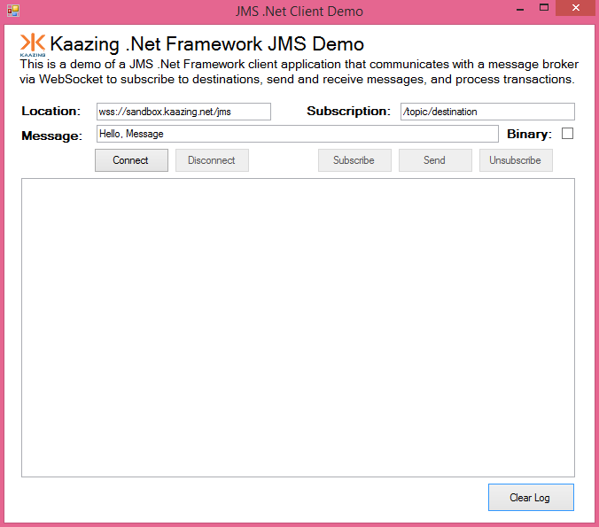

In this procedure, you will learn how to use the signed Kaazing Gateway JMS client libraries for .NET and the supported methods.
Note: For this how-to, you can use any JMS-compliant message broker. We will use the publicly available Kaazing WebSocket Gateway and Apache ActiveMQ broker at the URL wss://sandbox.kaazing.net/jms. If you are using a local Kaazing WebSocket Gateway, the Gateway is configured to connect to the server on tcp://localhost:61616. You can configure the connect URL in the file GATEWAY_HOME/conf/gateway-config.xml. See About Integrating Kaazing Gateway and JMS-Compliant Message Brokers for more information.
The Kaazing Microsoft .NET JMS API supports the following deployment scenarios:
.NET 4.0 Frameworks
.NET 4.5 (4.5.1) Frameworks, including Windows Surface RT
Windows 8 (8.1) desktop and Surface Pro applications
Navigate to the JMS app for Windows Desktop at dotnet.client.tutorials\jms\WindowsDesktop.
Double-click JmsDemo.sln. The solution opens in Visual Studio.
In Solution Explorer, right-click JmsDemo and click Build.
To run the app, click the Start arrow. The desktop app appears in a new window.

Figure: Windows JMS Desktop Tutorial App
In the app, click Connect to connect to the publicly available Kaazing WebSocket Gateway and jms service at URL wss://sandbox.kaazing.net/jms.
Click Subscribe to subscribe to a destination and then click Send to send a message to the JMS broker via Kaazing WebSocket Gateway and receive the message as part of your subscription.
Supported Data Types
You can send and receive JMS messages using one of the following data types:
String — A text WebSocket message (UTF-8).
Binary (using the IBytesMessage class) — A compact byte array representation for sending, receiving and processing binary data.
To Use the Kaazing JMS .NET API
To demonstrate the Kaazing JMS .NET API, let's create a simple .NET desktop application that uses the Kaazing WebSocket Gateway and its jms service to send and receives messages to a JMS broker over WebSocket. This is the same .NET JMS desktop application that is available on Github as part of the Kaazing .NET tutorials here https://github.com/kaazing/dotnet.client.tutorials.
Install a .NET Integrated Development Environment (IDE). This procedure assumes that you are using Microsoft Visual Studio or the free Visual Studio Community.
Note: You can develop .NET Framework applications in any of the .NET programming languages. Microsoft Visual C# is used in the code examples in this document.
Download the Kaazing Microsoft .NET SDK NuGet package file (.nupkg) from kaazing.com/download.
Install the Kaazing Microsoft .NET SDK into your project.
Open Visual Studio.
Create a new project. Click File, click New, and then click Project.
Click the Installed navigation heading, expand Templates, expand Visual C#, and click Windows Desktop.
Click Windows Forms Application.
At the top of the dialog, select .NET Framework 4.5.2.
In Name, enter JmsDemo and click OK. Visual Studio created the new JmsDemo project.
Install the Kaazing Microsoft .NET SDK. Click TOOLS, click NuGet Package Manager, and then click Package Manager Settings.
In the navigation, click Package Sources.
Click the plus icon to add a new source.
In Name, enter Kaazing.
In Source, click the browse button, ....
Locate the folder containing the .nupkg file for the Kaazing Microsoft .NET SDK and click Select.
Click OK.
Right-click the JMSDemo project, and click Manage NuGet Packages.
Click Online, click Kaazing, and then click Install.
Click Close.
In your project, expand the References element to see the Kaazing .NET SDK libraries.
Create the UI for the application. In JmsDemo, rename the Form1.cs form to StompDemoForm.cs and let Visual Studio rename all related references.
Expand StompDemoForm.cs and click StompDemoFormDesigner.cs
In the StompDemoForm.cs code window, replace the default import statements with the following:
using System;
using System.Collections;
using System.Collections.Generic;
using System.ComponentModel;
using System.Drawing;
using System.Linq;
using System.Text;
using System.Resources;
using System.Windows.Forms;
using Kaazing.JMS;
using Kaazing.JMS.Stomp;
using Kaazing.Security;
using System.Threading;
using Kaazing.HTML5;
using System.Threading.Tasks;
In the StompDemoForm class, add the interfaces for connections, sessions, messages, and the dictionary for the key/value pairs that will be sent and received.
namespace JmsDemo
{
/// <summary>
/// Top level JMS Client Demo
/// </summary>
public partial class StompDemoForm : Form
{
private IConnection connection = null;
private ISession session = null;
private IMessageConsumer consumer = null;
private IDictionary<String, List<IMessageConsumer>> consumers = null;
private delegate void InvokeDelegate();
private delegate void InvokeDelegate1();
/// The code for the subsequent steps goes here.
}
}
Next, add the StompDemoForm() function just below the /// The code for the subsequent steps goes here comment. It will set up the form, and set the default URL for the application to connect to. We will use the publicly available Kaazing WebSocket Gateway at wss://sandbox.kaazing.net/jms:
Add functions to respond when the user clicks the Connect and Disconnect buttons. The ConnectButton_Click() function will respond to the Connect button by calling the second function, JMS_Connect(). JMS_Connect() creates a connection instance using the StompConnectionFactory factory, calls methods to update the UI (we will add these later), and connects to the URL specified earlier. Note the use of a try...catch statement for connecting and responding to exceptions. The CloseButton_Click() function responds to when a user clicks the Disconnect button by closing the connection and then calls DisconnectedHandler() to update the UI.
Add a function to respond to when the user click the Subscribe or Unsubscribe buttons. The SubscribeButton_Click function creates the destination supplied by the user, creates a consumer of that destination, and add a MessageListener to listen for incoming messages. Then the function calls MessageHandler(), which we will create next. An IMessageConsumer object is used to get a list of consumers for the destination and add a consumer to it.
Add a function to handle incoming messages. The function will determine if the message is text or binary or a mapMessage (a set of name-value pairs) and display the message, message headers, and any properties in the log console.
class MessageHandler : IMessageListener
{
StompDemoForm form;
internal MessageHandler(StompDemoForm form)
{
this.form = form;
}
public void OnMessage(IMessage message)
{
form.BeginInvoke((InvokeDelegate)(() =>
{
if (message is ITextMessage)
{
ITextMessage textMessage = (ITextMessage)message;
form.Log("RECEIVED ITextMessage: " + textMessage.Text);
}
else if (message is IBytesMessage)
{
IBytesMessage msg = (IBytesMessage)message;
byte[] actual = new byte[(int)msg.BodyLength];
msg.ReadBytes(actual);
form.Log("RECEIVED IBytesMessage: " + BitConverter.ToString(actual));
}
else if (message is IMapMessage)
{
IMapMessage mapMessage = (IMapMessage)message;
IEnumerator<String> mapNames = mapMessage.MapNames;
while (mapNames.MoveNext())
{
String name = mapNames.Current;
Object obj = mapMessage.GetObject(name);
if (obj == null)
{
form.Log(name + ": null");
}
else if (obj.GetType().IsArray)
{
form.Log(name + ": " + BitConverter.ToString(obj as byte[]) + " (byte[])");
}
else
{
String type = obj.GetType().ToString();
form.Log(name + ": " + obj.ToString() + " ("+type+")");
}
}
form.Log("RECEIVED IMapMessage:");
}
else
{
form.Log("UNKNOWN MESSAGE TYPE");
}
}));
}
}
Add an exception listener to handle any exceptions and write them to the console log.
Add the SendButton_Click() function to respond when a user clicks the Send button. The function checks to see if the message is text or binary (user checked the binary option), adds any properties, updates the log console, and sends the message using IMessageProducer.
private void SendButton_Click(object sender, EventArgs e)
{
// Create a destination for the producer
IDestination destination;
if (DestinationText.Text.StartsWith("/topic/"))
{
destination = session.CreateTopic(DestinationText.Text);
}
else if (DestinationText.Text.StartsWith("/queue/"))
{
destination = session.CreateQueue(DestinationText.Text);
}
else
{
Log("Destination must start with /topic/ or /queue/");
return;
}
// Create the message to send
IMessage message;
if (BinaryCheckBox.Checked)
{
Log("SEND IBytesMessage:" + BitConverter.ToString(Encoding.UTF8.GetBytes(MessageText.Text)) + ": " + DestinationText.Text);
message = session.CreateBytesMessage();
((IBytesMessage)message).WriteUTF(MessageText.Text);
}
else
{
Log("SEND ITextMessage: " + MessageText.Text + ": " + DestinationText.Text);
message = session.CreateTextMessage(MessageText.Text);
}
// Create the producer, send, and close
IMessageProducer producer = session.CreateProducer(destination);
producer.Send(message);
producer.Close();
}
Add functions to define the console log limitations for the UI, the Clear Log button, and whether the Connect button is enabled.
Ensure the closing braces for the program are there.
}
}
Build and test your WebSocket .NET application.
From the Build menu, click Build. The Visual Studio output console records the successful build.
Click Start. The JMS .NET desktop application displays.
Ensure that the Location field contains wss://sandbox.kaazing.net/jms. Click Connect. The log console displays CONNECTED.
Click Subscribe and then Send. The text message is sent to the JMS broker via the jms service on the Gateway returns the message as part of the subscription.
Durable Subscribers
Note: Currently, the Gateway does not support durable subscribers with Apache ActiveMQ. You may use durable subscribers with TIBCO EMS or Informatica UM. For more information, see Durable Subscribers.
If your JMS client needs to receive all of the messages published on a topic, including the ones published while the subscriber is inactive because it is not being used or has lost connections (which is common when using mobile devices), create a durable ITopicSubscriber using the iSession.createDurableSubscriber() method.
The JMS provider retains a separate record of each durable subscription and ensures that all messages from the topic's publishers are retained until they are acknowledged by each durable subscriber or they have expired. Whether messages have been acknowledged is tracked separately for each durable subscriber, and each durable subscriber is identified by the combination of its name and the clientID (if any) set on the Connection. Ensure your application confirms that the clientID (if used) is unique to the user or device, or, if it does not use clientID's, ensure that the durable name is unique to the user or device.
One method you can use to ensure that the durable name is unique to the user or device without using a client ID is to create a variable that is a concatenation of the user name and durable name and use that variable when creating the durable subscription.
Example
The following example creates a durable subscriber with message selector, sends one matching and one mismatching message to the subscription message selector, and verifies that only the matching is received.
String DURABLE_NAME = "durable_messageSelectorTest" + KZSystem.CurrentTimeMillis();
String CLIENT_ID = null;
/// Create the clientID variable
if (useClientID)
{
CLIENT_ID = "client1";
}
StompConnectionFactory connectionFactory =
new StompConnectionFactory(new Uri(GetStompProviderURL()));
IConnection connection =
useClientID ? connectionFactory.CreateConnection(null, null, CLIENT_ID) :
connectionFactory.CreateConnection(null, null);
ISession session = connection.CreateSession(false, SessionConstants.CLIENT_ACKNOWLEDGE);
connection.Start();
/// Create the durable subscriber with message selector
String TOPIC_NAME = "/topic/topic_offlineDeliveryTest" + KZSystem.CurrentTimeMillis();
const String MESSAGE_SELECTOR1 = "prop='val1'";
ITopic topic = session.CreateTopic(TOPIC_NAME);
ITopicSubscriber consumer =
session.CreateDurableSubscriber(topic, DURABLE_NAME, MESSAGE_SELECTOR1, false);
IConnection sendConnection = connectionFactory.CreateConnection(null, null);
ISession sendSession = sendConnection.CreateSession(false, SessionConstants.AUTO_ACKNOWLEDGE);
IMessageProducer producer = sendSession.CreateProducer(topic);
/// Sleep at the point to ensure the SUBSCRIBE went through for the createDurableSubscriber call
/// Otherwise, if the send message goes through before SUBSCRIBE, the message is not received.
Thread.Sleep(2000);
/// Send one matching and one mismatching message to the subscription message selector
producer.Send(sendSession.CreateTextMessage("1-MISMATCHING-MSG"));
ITextMessage message = sendSession.CreateTextMessage("2-MATCHING-MSG");
message.SetStringProperty("prop", "val1");
producer.Send(message);
/// Verify that only the matching message2 is received
ITextMessage received = (ITextMessage)consumer.Receive(5000);
Assert.IsNotNull(received, "Message sent while subscriber still open should have been received");
Assert.AreEqual("2-MATCHING-MSG", received.Text);
received.Acknowledge();
/// Close consumer (UNSUBSCRIBE)
consumer.Close();
connection.Close();
The Microsoft .NET 4.0 Framework has a maximum connection limit of two per domain, similar to the browser limitation. For any Microsoft .NET application that uses more than one WebSocket connection at a time, you must either ensure that any WebSocket connection is closed by using WebSocket.Close() before opening another WebSocket connection, or increase the connection limit on the application by updating the maxconnection attribute in the app.config file. For more information, see (KG-1851) Two Connection Limit in Kaazing Gateway JMS Clients for Microsoft .NET in Release Notes.
Clients built using Kaazing Gateway 3.x libraries will work against Kaazing Gateway 4.x. If you wish to upgrade your 3.x client to the 4.x libraries, please note that the 3.x clients used a single Stomp JMS library and 4.x clients include and use separate WebSocket and Stomp JMS libraries. Update your client library file and code references to include both the WebSocket and Stomp JMS libraries, as described in the 4.x documentation.
TemporaryTopic and TemporaryQueue objects are destroyed when the client loses its connection to the Gateway, or when the JMS-compliant message broker loses its connection to the Gateway. To address this, monitor the client's exception listener to handle recovery for your application. Once the connection is re-established, recreate TemporaryTopic and TemporaryQueue. ConnectionDroppedException and ConnectionInterruptedException are delivered to the connection's exception listener via onException, indicating that messages in flight might be lost, depending on message delivery options. ConnectionRestoredException is delivered to indicate that the connection through to the JMS-compliant message broker has been re-established. TemporaryTopic and TemporaryQueue should be recreated at that time to resume operations.
You can verify that Kaazing Gateway has signed the relevant .NET DLL by selecting the DLL in the File Browser, then right-clicking and opening the Properties dialog. On the Digital Signatures tab, you can view the Name of Signer value and a timestamp of when the DLL was signed. The email address is "Not available." For more information, see an example C program that shows how to use the Microsoft mechanism to verify a signature (a DLL is one example of a Portable Executable, or PE, file). You can also learn more about preventing DLL pre-loading attacks.